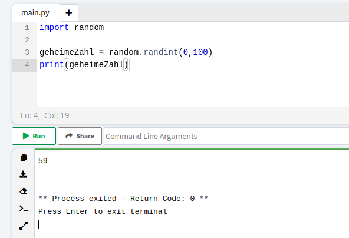

Gibt es Zufall in Python?
Wir haben bereits gelernt, dass Computer sich sehr streng an Regeln halten und nicht selber denken können. Und genau aus dem Grund ist es sehr schwer von dem Computer zu verlangen, dass er sich z.B. eine zufällige Zahl ausdenkt. Damit er eine zumindest für uns zufällige Zahl aussucht, benötigt es mathematisch sehr komplexe Algorithmen. Zu unserem Glück, haben sehr schlaue Frauen und Männer schon solchen Code geschrieben, welchen wir einfach nutzen können. Dazu laden wir uns die fertig geschrieben Funktionen in unser Skript und können sie einfach nutzen. Das ist einer der vielen Vorteile an der Programmiersprache Python: Es gibt eine große Gemeinschaft, welche Code gegenseitig zur Verfügung stellt.
Mittels Bibliotheken, (engl. Libraries) können fertige Funktionen in unser eigenen Skript geladen werden. Der Befehl dazu lautet: import LibrarieName. Für das Zahlen Raten Spiel laden wir uns die Bibliothek für Zufall in das Skipt. Sie heißt random, was das englische Wort für Zufall ist.
Ist diese Bibliothek importiert, kann mit dem Befehl random.randint(minWert, maxWert) eine zufällige Zahl erhalten werden.

Jetzt, wo du Bibliotheken und Zufall in Python kennst, kannst du mit For-Schleifen selber ein Zahlen Raten Spiel programmieren.
Ran an die Praxis